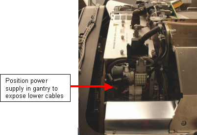
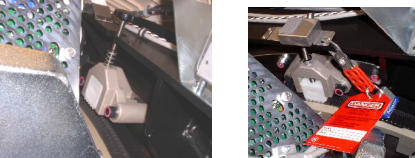
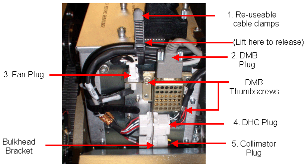
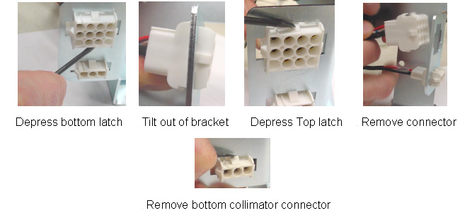
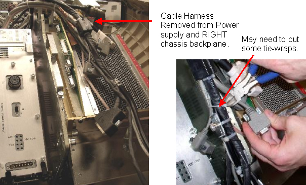
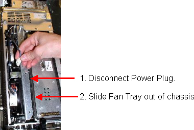
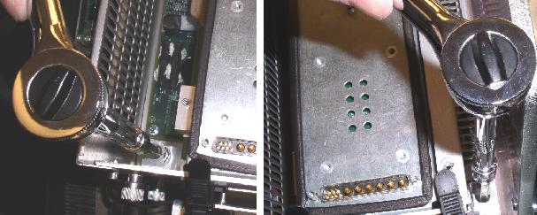
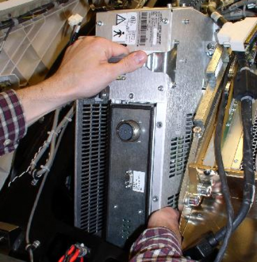

Operating Documentation
Direction 5193891-800, Rev# 5
LightSpeed 5.X Pro16 Limited Access Service Information (Adv)
Operating Documentation |
| Required Persons | Preliminary Reqs | Procedure | Finalization |
|---|---|---|---|
| 1 | Timing Not Applicable | 45 mins | 10 mins |
The digital GDAS power supply is mounted on the rotating Gantry. Looking through the gantry from the table end, the digital power supply is serviced from the left side of the gantry.
| NOTE: | All left/right orientation in this procedure is based on the viewpoint of an individual looking through the gantry opening, from the table end. |
| Last Revised: | March 15, 2005 |
| Item | Qty | Effectivity | Part# | Manufacturer | |
|---|---|---|---|---|---|
| Torque Wrench | 1 | - | - | - | |
| Standard FE Toolkit | 1 | - | - | - | |
| Insulated “Tweaker” Adjustment Tool (6-inch length) | 1 | - | - | - | |
| 12” 10mm Hex Allen (part of System Service Kit) | 1 | - | - | - | |
| Item | Qty | Effectivity | Part# | Manufacturer | |
|---|---|---|---|---|---|
| DAS Digital Power Supply | 1 | - | GEMS-GE | ||
| ELECTROCUTION HAZARD. | |
| HIGH VOLTAGE PRESENT. | |
| Use proper lockout/tagout procedures before replacing the components. |
| CRUSH HAZARD. | |
| UNEXPECTED GANTRY ROTATION CAN CAUSE SERIOUS INJURY. | |
| Never service the gantry with the axial drive enabled. |
| Potential for Injury to Service Personnel. | |
| Each Power Supply Chassis Weighs Nearly 30 Pounds. | |
| Depending on your height, a step stool may be required to reach over the TGP for PS removal and installation. Use your judgement to determine if a second person may be required to assist with removal and installation. |
| Burn Injury Possible. | |
| Power Supply May Be Hot to Touch. | |
| Use caution to prevent possible burn injury from hot surface contact. |
| Follow ALL required safety and PPE procedures customary for your organization, when working on this product. | |
| Do not use a large screwdriver to tighten the cable Jackscrews. These need only be finger tight. If access does not allow for hand tightening then use a small screwdriver and just snug them up. Excessive torque will damage the jackscrew and/or Receiver Hex and Stand-off. | |
| Condition | Reference | Eff |
|---|---|---|
Do not remove both supplies together. If both supplies require replacement, you must first swap one supply and then change the other. | - | - |
Only trained service personnel should service the GE CT Scanner. | - | - |
Position the table to its lowest position, fully out of the gantry.
Remove gantry covers as required.
Refer to Parts Replacement → Gantry → Enclosure → (Cover Removal Procedure)..
| ELECTROCUTION HAZARD. | |
| HIGH VOLTAGE PRESENT. | |
| Use proper lockout/tagout procedures before replacing the components. |
Position the gantry to access the DAS power supply on the left side (same side as TGP) to gain access to the connectors and cables on the bottom of the supply. See Illustration 1.
Illustration 1: Position Power Supply for Removal

From the RIGHT side of the gantry, (Same side as ORP), turn OFF:
Axial Drive switch.
HVDC Switch.
120VAC Switch.
Use the Index Lock to lock the gantry. See Illustration 2.
Illustration 2: (Safety) Index Lock

Loosen the reusable Cable Clamps where found.
Remove the cables, cable mount brackets and harnesses from the bottom of the power supply. The suggested order of removal is as follows: Loosen Cable clamps, Detector Memory Board plug (DMB), Fan Plug, Detector Heater Control Board plug (DHCB), Collimator plug. See Illustration 3.
Illustration 3: Hardware Removal Sequence

Disconnect the DMB bracket from the supply.
The Bulkhead Mount Bracket is mounted to the power supply assembly. Because of this, it will be necessary to completely remove the female Mate-N-Lock connectors from the cable Mount bracket using a small screwdriver. The removal sequence is shown below (also refer to Illustration 4).
Depress the bottom latch.
Tilt out of bracket.
Depress the top latch.
Remove the connector.
Remove the bottom collimator connector.
Illustration 4: Connector Removal Order - DHC Mate-n-Lock Connector

Disconnect cables to J1, J2 and J3 on the power supply.
Disconnect J30, J31, J32, J49, and J33 of the RIGHT DAS chassis.
If necessary rotate the gantry. Remove harness brackets, (Captive screws) from the DAS/Detector plate.
Remove cables J99 and J104 from the CENTER DAS chassis.
| NOTE: | In the next step the Harness will be moved:
|
Move the harness out of the way. Slack in the harness can be achieved by cutting tie-wraps holding the cable connector (Connector J32). Pull the harness gently up and over the DAS plate. See Illustration 5.
Illustration 5: Cable Harness and Harness Brackets

| Burn Injury Possible. | |
| Power Supply May Be Hot to Touch. | |
| Use caution to prevent possible burn injury from hot surface contact. |
Remove the top cover of the power supply, (7 captive screws). Loosen the 3 captive screws holding the fan tray assembly (1 on top and 2 on the side). Use a 4mm hex wrench, T30 Torx wrench or short flat blade screwdriver. Disconnect the Fan tray power plug and pull out the fan tray.
Illustration 6: Disconnect the Fan Power Plug and Remove the Fan Tray

Completely loosen the four mounting bolts. These are captive bolts, so they cannot be lost.
Illustration 7: Loosen the Four Power Supply Bolts

| CRUSH HAZARD. | |
| UNEXPECTED GANTRY ROTATION CAN CAUSE SERIOUS INJURY. | |
| Never service the gantry with the axial drive enabled. |
| NOTE: | Be careful not to hit the home flag sensor board when removing supplies on the TGP side of the gantry. |
Remove the power supply assembly from the gantry using the handle as shown in Illustration 8.
Illustration 8: Power Supply Removal

Transfer the cable bulkhead on the side of the defective supply to the replacement supply.
Remove the cover of the replacement power supply.
Insert the new power supply into the gantry using the guide pins on the rotating base.
Tighten all 4 bolts to the specified torque setting shown in Table 1.
Table 1: Torque Values
| 66.4 N-m | 49 lb-ft | 588 lb-in | 677 kg-cm |
| Do not use a large screwdriver to tighten the cable Jackscrews. These need only be finger tight. If access does not allow for hand tightening then use a small screwdriver and just snug them up. Excessive torque will damage the jackscrew and/or Receiver Hex and Stand-off. | |
Re-insert the Fan Tray and secure with its captive screws.
Reconnect the Fan Tray power connector.
Check the terminal connections on each fan. Make sure they did not come loose.
Reinstall the power supply cover.
Reconnect cables J99 and J104 from the CENTER DAS chassis.
Reconnect the cabling harness and harness clamps (captive screws) to the GDAS chassis. Make sure all cable clamps are secure.
If tie-wraps were cut and removed, replace them with new ones.
If necessary rotate the gantry. Reconnect J33, J49, J32, J31,J30 of the RIGHT DAS chassis, in this order.
If necessary, rotate the gantry up or down to get the best position to reconnect the connectors to the power supply.
Re-install the Mate-N-Lock connectors into the bulkhead bracket.
Reconnect the following:
DHCB plug
Collimator plug
Fan plug
Reattach the DMB with its thumbscrews. Then reconnect DMB connector.
Route harnesses and cables through reusable Cable clamps and secure the cable clamps.
Release the Index Lock and safety equipment.
| POSSIBLE EQUIPMENT DAMAGE. | |
| SERVICE ACTION REQUIRED REMOVAL OF EITHER ROTATING OR STATIONARY GANTRY SUB-ASSEMBLIES. MAKE SURE GANTRY FREELY ROTATES WITHOUT INTERFERENCE. | |
| NEVER SERVICE THE GANTRY WITH THE AXIAL DRIVE ENABLED. |
MANUALLY rotate the gantry several times while inspecting the cables removed, to make sure that they are properly secured to the rotating side of the gantry, and are not loose or interfering with rotation.
| POTENTIAL FOR SHOCK. | |
| VOLTAGE IS PRESENT. | |
| Failure to use an Insulated voltage adjustment "Tweaker" can result in personal injury and/or component damage. |
Adjust 5V supplies output, if necessary. Refer to GDAS Power Supply Adjustment procedure for instructions.
Replace all covers.
Perform a basic scan to ensure the system is functioning normally.